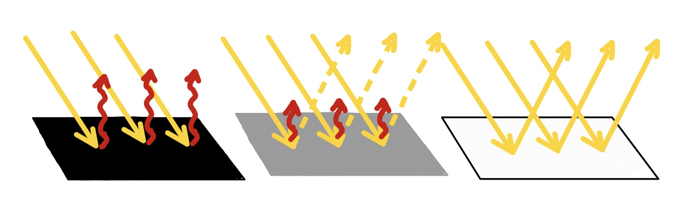
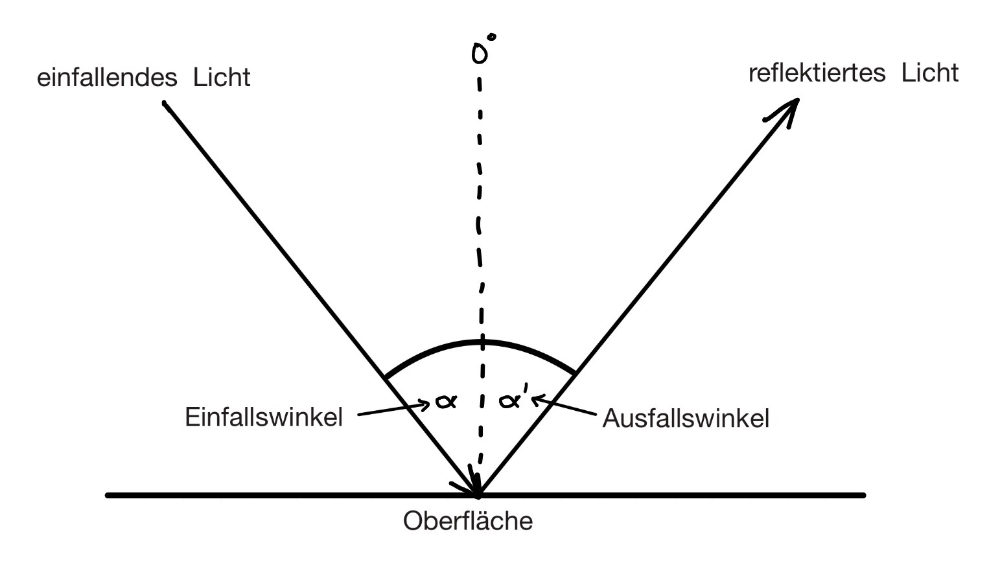
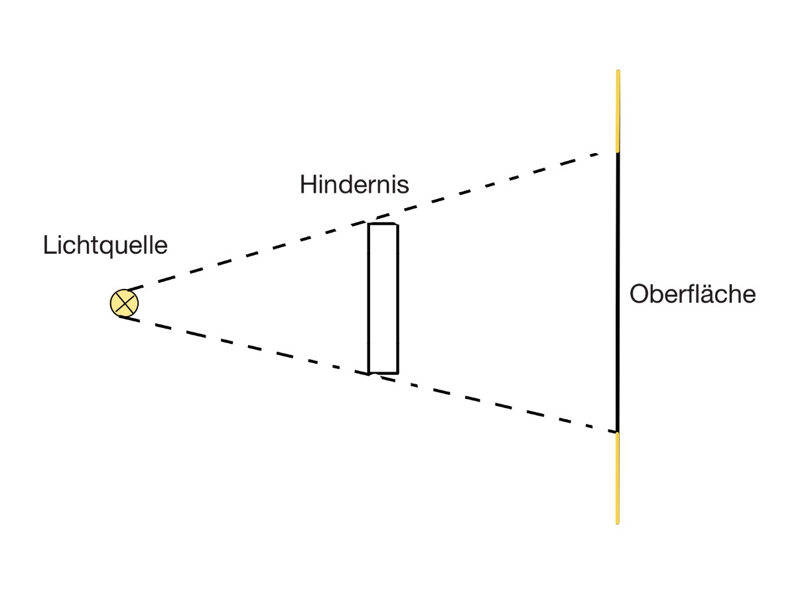
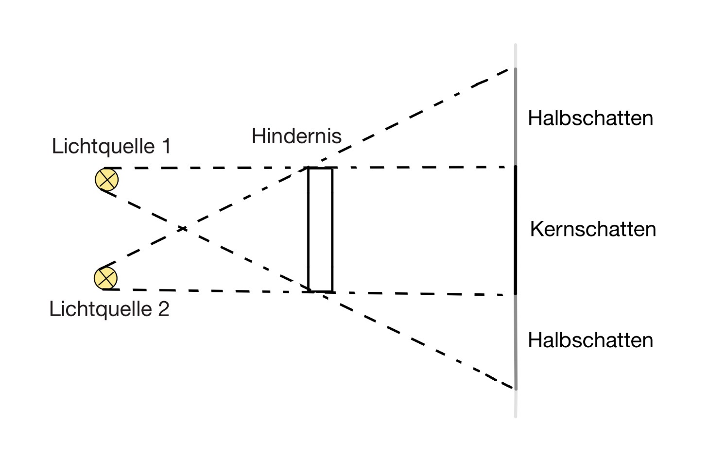
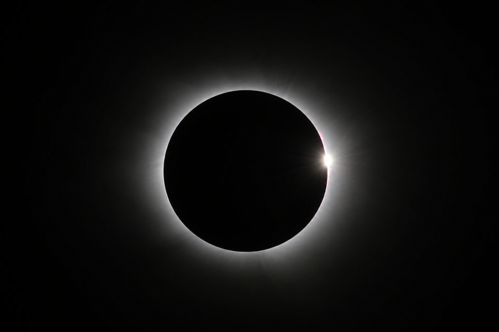
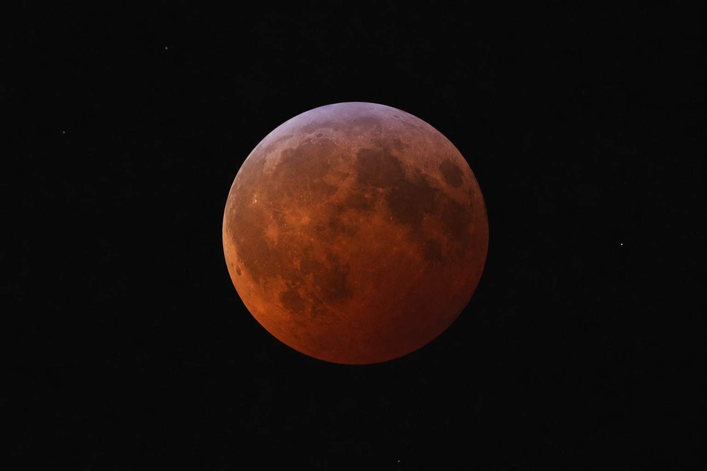
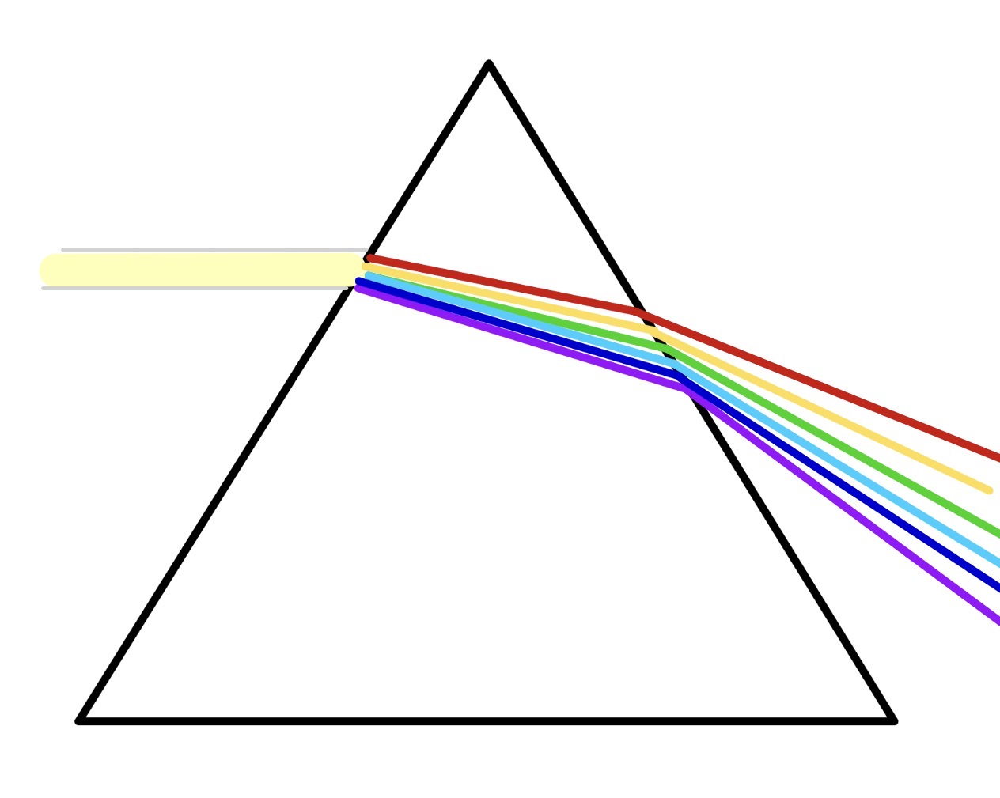

Licht begleitet uns das gesamte Leben lang. Dabei werden wir unbewusst von den Gesetzen der Physik umgeben. Doch wie funktioniert das eigentlich und gibt es Sachen, die wir bisher noch nicht wussten?
Lichtstrahlen verlaufen immer geradlinig. Wenn man also mit einer Lampe direkt auf einen Schirm zielt, kommt das Licht auch genau dort an.Beim Auftreffen auf eine Oberfläche, kann es zu einem bestimmten Anteil reflektiert, also zurückgestrahlt werden. Der Rest wird absorbiert, d.h. die Oberfläche "schluckt" das Licht. So wird die Lichtenergie in Wärmeenergie umgewandelt und die Oberfläche erwärmt sich. Wie groß der Anteil des Lichts ist, der reflektiert wird, ist von zwei Faktoren abhängig. Je größer Einfallswinkel des Lichtes und je heller die Oberfläche ist, desto mehr Licht wird reflektiert.

Aus diesem Grund wirkt Wildwasser oft weiß in unserem Auge und uns wird schneller warm, wenn wir dunkle Kleidung tragen. Wichtig zu wissen ist, dass bei der Reflexion des Lichts immer gilt: Einfallswinkel = Ausfallswinkel. Das heißt, wenn Licht senkrecht (also mit 0° Einfallswinkel) auf eine Oberfläche trifft, wird es ebenfalls senkrecht zur Oberfläche (auch 0°) zurückgeworfen. Trifft das Licht in einem Winkel von 30° auf, wird es auf der anderen Seite mit 30° gespiegelt.

Wenn es ein Hindernis zwischen der Lichtquelle und der Oberfläche gibt, auf der es auftreten soll, entsteht ein Schatten. Um diesen graphisch zu ermitteln, kann man beidseitig eine Gerade von der Lichtquelle über den äußeren Rand des Hindernisses bis hin zur Oberfläche zeichnen.

Gibt es zwei Lichtquellen, die auf ein Hindernis treffen, kann man zwischen zwei Arten von Schatten unterscheiden: den Halb- und Kernschatten. Halbschatten entstehen, wenn nur das Licht der einen Lichtquelle auf der Oberfläche auftrifft, das Licht der anderen Lichtquelle aber durch das Hindernis abgeschirmt wird. Kernschatten entstehen wenn das Licht beider Lichtquellen vom Hindernis abgeschirmt wird.

Auch im Universum spielt dies eine Rolle: Bei einer Sonnenfinsternis schiebt sich der Mond zwischen die Sonne und die Erde und wirft so einen Schatten auf die Erde. Das Licht der Sonne wird damit verdunkelt.

Bei einer Mondfinsternis wiederum schiebt sich die Erde zwischen Sonne und Mond und wirft einen Schatten auf diesen. Bei diesem Vorgang kann man zwischen drei Arten unterscheiden. Bei der totalen Mondfinsternis befindet sich der Mond vollständig im Kernschatten der Erde und erscheint rot, weil durch die Erdatmosphäre der rote Anteil des Sonnenlichts gestreut wird, während der blaue Anteil herausgefiltert wird. Bei der partiellen Mondfinsternis taucht der Mond nur teilweise in den Kernschatten ein und bei der Halbschattenfinsternis durchläuft der Mond nur den Schattenrand der Erde.

Hält man ein Prisma zwischen Lichtquelle und Leinwand, kann man einen Regenbogen erkennen. Dies liegt daran, dass Weißlicht eigentlich aus allen Farben besteht, welche erst gebündelt weiß erscheinen. Beim Durchdringen des Glases wird das Licht gebrochen und alle Farben laufen in leicht anderen Winkeln weiter. Das liegt daran, dass Licht eigentlich, nicht wie in der unteren Mittelstufe vermittelt, nicht ausschließlich gradlinig verläuft, sondern durchaus Welleneigenschaften besitzt. Die einzelnen Farben des Lichts unterscheiden sich darin, dass sie unterschiedliche Wellenlängen besitzen. Die für uns sichtbaren Farben reichen von Lila (Wellenlänge beginnt bei 390 nm) bis Rot (Wellenlänge reicht bis zu 780 nm).

Allerdings gibt es auch die Farben Infrarot und Ultraviolett, die für das menschliche Auge nicht sichtbar sind. Ultraviolett macht sich für uns erst durch einen Sonnenbrand bemerkbar, Infrarot merkt man an der Wärme, die von Licht ausgehen kann.
Hast du dir alles gemerkt?
Teste dein Wissen hier mit einem Kreuzworträtsel: